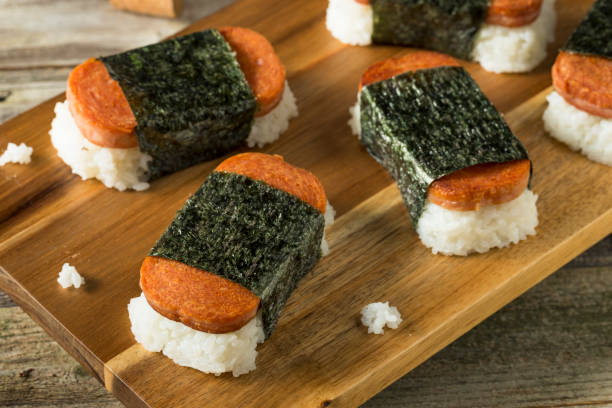

Spam Musubi Recipe
Home

Ingredients
- 2 cups uncooked short-grain white rice
- 2 cups water
- 6 tabelspoons rice vinegar
- 1/2 cup white sugar
- 1/4 cup soy sauce
- 1/4 cup oyster sauce
- 1 container fully cooked Spam
- 2 tablespoons vegetable oil
- 5 sheets suhi nori dry seaweed
Recipe
- Gather all ingredients
- Soak uncooked rice in water to cover for 4 hours; drain and rinse
- Bring 2 cups water to a boil in a medium saucepan. Add rice and stir. Reduce heat, cover, and simmer for 20 minutes.
- Remove pan from heat and stir in rice vinegar. Set aside to cool.
- Stir sugar, soy sauce, and oyster sauce together in a medium bowl until sugar is completely dissolved.
- Slice luncheon meat lengthwise into 10 slices, or to desired thickness, and marinate in sauce for 5 minutes.
- Heat oil in a large skillet over medium-high heat. Cook slices until lightly browned, about 2 minutes per side.
- Cut nori sheets in half and lay on a flat work surface.
- Place a rice press in the center of a sheet, and press rice tightly inside.
- Top with a slice of luncheon meat, and remove press.
- Wrap nori around rice, sealing edges with a small amount of water. (Rice may also be formed by hand in the shape of the meat slices and about 1-inch thick.)
- Serve musubi warm or chilled.